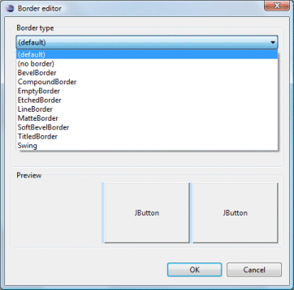
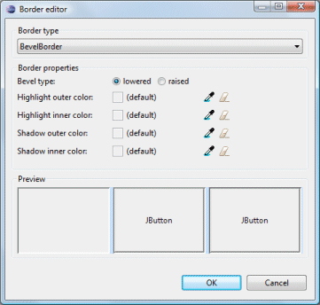
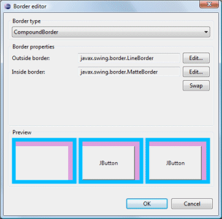
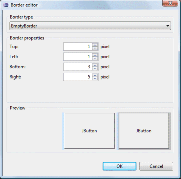
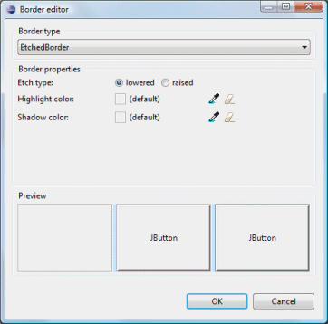
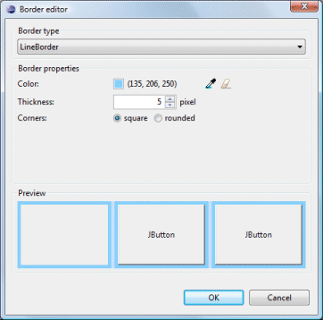
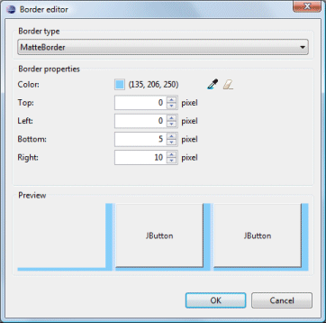
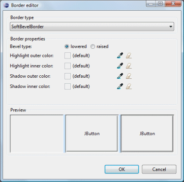
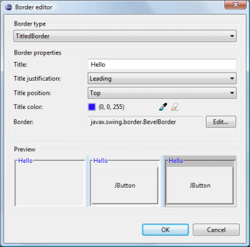
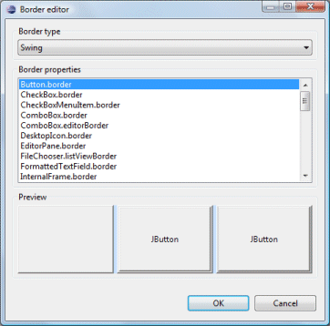

Click the
 button
to access the Border Editor and configure a border. Select the border
type from the drop down list and then choose options unique to that border
types. Three previews of what the border will look like are shown at the bottom
of the dialog.
button
to access the Border Editor and configure a border. Select the border
type from the drop down list and then choose options unique to that border
types. Three previews of what the border will look like are shown at the bottom
of the dialog.

The following border types are supported:
- BevelBorder
- CompoundBorder
- EmptyBorder
- EtchedBorder
- LineBorder
- MatteBorder
- SoftBevelBorder
- TitledBorder
- Swing
BevelBorder

- Select a bevel type: raised or lowered
- Select a highlight outer color
- Select a highlight inner color
- Select a shadow outer color
- Select a shadow inner color
- Choose a color using the Select Color button
- Reset to the default color using the Clear Color button
CompoundBorder

- Create an outside border by clicking the Edit button
- Create an inside border by clicking the Edit button
- Swap the two borders using the Swap button
EmptyBorder

- Specify the top, left, bottom and right insets
EtchedBorder

- Select an etch type: raised or lowered
- Select a highlight color
- Select a shadow color
- Choose a color using the Select Color button
- Reset to the default color using the Clear Color button
LineBorder

- Select a color
- Specify the thickness
- Select a corner type: square or rounded
- Choose a color using the Select Color button
- Reset to the default color using the Clear Color button
MatteBorder

- Select a color
- Specify the top, left, bottom and right
insets
- Choose a color using the Select Color button
- Reset to the default color using the Clear Color button
SoftBevelBorder

- Select a bevel type: raised or lowered
- Select a highlight outer color
- Select a highlight inner color
- Select a shadow outer color
- Select a shadow inner color
- Choose a color using the Select Color button
- Reset to the default color using the Clear Color button
TitledBorder

- Enter a title
- Select a title justification
- Select a title position
- Select a title color
- Create an border by clicking the Edit button
- Choose a color using the Select Color button
- Reset to the default color using the Clear Color button
Swing

- Choose a built-in Swing border style